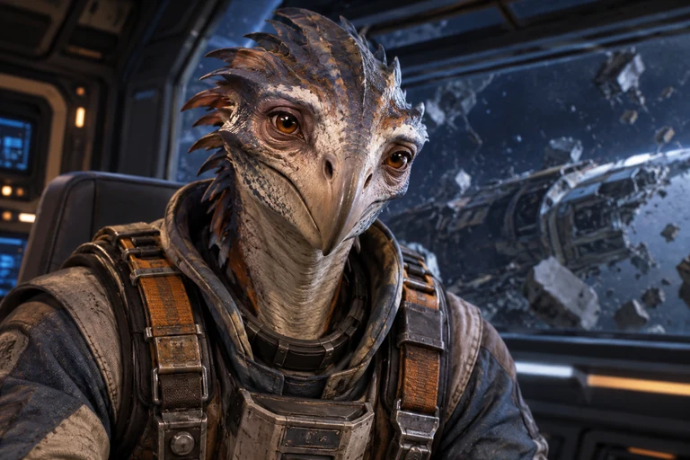

WAYFARERHaven Orbit
STATIONDock
Wayfarer display unavailable
The graphical scene could not be loaded. Your saved game state has not been changed.
HAVEN’S REACH
Haven’s Reach is a young frontier beyond the settled worlds. You are an independent operator with a ship of your own and no one telling you what you must do next. Carry freight, trade between settlements, follow information, explore unfamiliar places, meet the people who live here, and decide for yourself when something—or someone—is worth getting involved with. The frontier will remember what you do.
How to play: Tap the ship’s consoles to manage navigation, cargo, communications, and engineering. When you leave the ship, tap people and interesting places in the scene to interact with them. Talk to people and pay attention to what you learn—there isn’t always a mission marker telling you where an opportunity might lead.
The graphical scene could not be loaded. Your saved game state has not been changed.
HAVEN’S REACH / PLAYTHROUGH DATA
Autosave keeps your current playthrough on this device. A backup gives you a portable copy you can keep elsewhere.
WAYFARER / ENGINEERING
WAYFARER / COMMUNICATIONS
WAYFARER / OPERATIONS

MERIDIAN EXCHANGE / VEYLAN BROKER

HAVEN / SHIPWRIGHT

HAVEN COMMONS / KHAROK PROPRIETOR
HAVEN COMMONS / LOCAL LIFE
LOCAL FREIGHT MARKET
MERIDIAN EXCHANGE / RECLAMATION YARD
HAVEN / OLD GANTRY
CALDER'S DRIFT / FIELD INVESTIGATION

THE LAST LANTERN / INDEPENDENT TRADER
The trader from the debris field is here at Prospect Reach.
DEBRIS FIELD / DISTRESS VESSEL
THE LAST LANTERN / ROUTE TALK